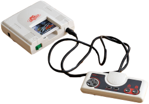
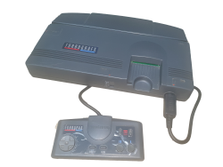
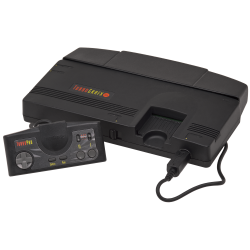

The Turbo Grafx was the European version of Turbo Grafx16 launched in North America 1988. Prior to that the console was originally called the PC Engine in it’s origin country Japan. The PC-Engine was a collaboration of two Japanese companies, Hudson Soft who managed the console design and a branch of the globally recognised NEC corporation, this instance the Home Electronics branch of NEC. The console was marketed as a 16bit console at the time boasting and 8 bit CPU and a 16bit graphics processor. So in reality it was a semi 16bit console, making it better than what was arround at the time for a short while. The console was first introduced to the games console market in Japan 1987 and quickly became popular amongst both Japanese and the gaming international gaming community through rare unofficial imports.



The console has an 8-bit CPU and a dual 16-bit graphics processing unit (GPU) chipset consisting of a video display controller (VDC) and video color encoder. The GPUs are capable of displaying 482 colors simultaneously, out of 512. With dimensions of just 14 cm × 14 cm × 3.8 cm (5.5 in × 5.5 in × 1.5 in), the Japanese PC Engine is the smallest major home game console ever made.Games were released on HuCard cartridges and later the CD-ROM optical format with the TurboGrafx-CD add-on. The "16" in its North American name and the marketing of the console as a 16-bit platform despite having an 8-bit CPU was criticized by some as deceptive.
Hudson Soft & NEC- Join Forces
The PC Engine was created as a collaborative effort between Hudson Soft, who created video game software, and NEC, a company which was dominant in the Japanese personal computer market with their PC-88 and PC-98 platforms. NEC lacked the vital experience in the video gaming industry and approached numerous video game studios for support. By pure coincidence, NEC's interest in entering the lucrative video game market coincided with Hudson's failed attempt to sell designs for then-advanced graphics chips to Nintendo; In July 1985, Hudson Soft approached and pitched them a new add-on for the Famicom that played games using their patented Bee Cards, which they had experimented with on the MSX computer. Nintendo liked this concept, as it had the ability to store full games and overwrite existing ones. However, as the technology for it was expensive, and that they would have to pay royalties for each card sold, Nintendo instead decided to pass on Hudson Soft's proposal. This eventually led to the partnership between Hudson Soft and NEC. The two companies successfully teamed up to then develop the PC Engine.
The system made its debut in the Japanese market on October 30, 1987, and it was a tremendous success. The PC Engine had an elegant, "eye-catching" design, and it was very small compared to its rivals. The PC Engine sold 500,000 units in its first week of release.
The CD-ROM expansion was a major success for the CD-ROM format, selling 60,000 units in its first five months of release in Japan. By 1989, NEC had sold over 1.2 million consoles and more than 80,000 CD-ROM units in Japan.
The North American Launch
In 1988, NEC decided to expand to the American market and directed its U.S. operations to develop the system for the new audience. NEC Technologies boss Keith Schaefer formed a team to test the system. They found out that there was a lack of enthusiasm in its name "PC Engine" and also felt its small size was not very suitable to American consumers who would generally prefer a larger and "futuristic" design. They decided to call the system the "TurboGrafx-16", a name representing its graphical speed and strength and its 16-bit GPU. They also completely redesigned the hardware into a large, black casing. This lengthy redesign process and NEC's questions about the system's viability in the United States delayed the TurboGrafx-16's debut.
The TurboGrafx-16 (branded as the TurboGrafx-16 Entertainment SuperSystem on the packaging and promotional material) was eventually released in the New York City and Los Angeles test markets in late August 1989. However, this was two weeks after Sega of America released the Sega Genesis with a 16-bit CPU to test markets. Unlike NEC, Sega did not waste time redesigning the original Japanese Mega Drive system, making only slight aesthetic changes.
The Genesis quickly eclipsed the TurboGrafx-16 after its American debut. NEC's decision to pack-in Keith Courage in Alpha Zones, a Hudson Soft game unknown to western gamers, proved costly as Sega packed-in a port of the hit arcade title Altered Beast with the Genesis. NEC's American operations in Chicago were also overhyped about its potential and quickly produced 750,000 units, far above actual demand. This was very profitable for Hudson Soft as NEC paid Hudson Soft royalties for every console produced, whether sold or not. By 1990, it was clear that the system was performing very poorly and NEC could not compete with Nintendo and Sega's marketing.
In late 1989, NEC announced plans for a coin-op arcade video game version of the TurboGrafx-16. However, NEC cancelled the plans in early 1990.
The Turbo Grafx - European Version
In Europe, the console is known by its original Japanese name PC Engine, rather than its American name TurboGrafx-16.PC Engine imports from Japan drew a cult following, with a number of unauthorized PC Engine imports available along with NTSC-to-PAL adapters in the United Kingdom during the late 1980s. In 1989, a British company called Mention manufactured an adapted PAL version called the PC Engine Plus. However, the system was not officially supported by NEC. From November 1989 to 1993, PC Engine consoles as well as some add-ons were imported from Japan by French importer Sodipeng (Société de Distribution de la PC Engine), a subsidiary of Guillemot International. This came after considerable enthusiasm in the French press. The PC Engine was largely available in France and Benelux through major retailers. It came with French language instructions and also an AV cable to enable its compatibility with SECAM television sets.
After seeing the TurboGrafx-16 falter in America, NEC decided to cancel their European releases. Units for the European markets were already produced, which were essentially US models modified to run on PAL television sets. NEC sold this stock to distributors; in the United Kingdom, Telegames released the console in 1990 in extremely limited quantities.
The Turbo Grafx Archive 2025